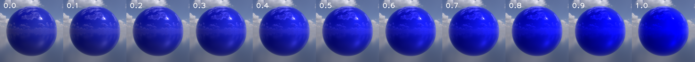

Motivational Image
Motivational Image
Moon Rabbit
Explanation
Similar to the Western folklore about "Man on the Moon", in Asian culture, the moon rabbit is a famous mythical figure that represents people's yearning and curiosity for outward exploration. As shown in the motivational image, the basic idea of our proposal is to place animals (eg. rabbits) as well as some common objects on earth to the moon's surface. The central theme for the image will ideally be a scene for rabbit civilization on the moon with Earth and the universe as the background, which is subtly the opposite of reality. The "out of place" results from that the moon does not have the conditions for the rabbits' survival and civilization development.
Comments
Due to the lack of time, we are not able to attend the render competition. Therefore, the following validation will not include the effects of the rendered theme image.
Feature Lists
Below are the features we select for our path tracer to achieve better rendering performance.
Features implemented by Ningfeng Zhou
- 15.4 Homogeneous Participating Media [integrator: path tracer]
- 15.8 Advanced Camera Model [depth of field, lens distortion, chromatic aberrations]
- 30.2 Subsurface Scattering [photon-beam diffusion]
Features implemented by Yitong Xia
- 5.10 Simple Extra Emitter [Spotlight]
- 5.11 Textured Area Emitters
- 15.3 Environmental Map Emitter
- 15.5 Disney BSDFs [roughness, specular, metallic, sheen, anisotropic]
- 15.9 Moderate Denoising 1: NL-Means using Pixel Variance Estimates
References
Feature Implementation
Homogeneous Participating Media [integrator: path tracer] Implementer: Ningfeng Zhou [home]
- Main file created for the feature (other files trivally modified for code frame are listed in ./nori/modifiedFiles.txt)
./include/nori/medium.h ./include/nori/volpathmis.h ./src/medium.cpp ./src/volpathmis.cpp
To implement the homogeneous media, firstly I create a medium class HomogeneousMedium (here for simplicity, I did not include an abstract Medium class) to perform free path sampling.
For the phase function, I implemented Henyey Greenstein since it is more generic. Both class support functions such as sample(), eval() and pdf(), which will be used by the volume path tracer.
Thus in total, the four additional parameters added onto the medium are \(\sigma_a\), \(\sigma_s\), resulting \(\sigma_t\), and \(g\).
The volume path tracer follows roughly the same routine as the path_mis integrator, but instead of only sampling between lights and BSDFs, the sampling between phase function and light should also be considered.
Besides, additional revisions are also made. Such as attaching the medium class pointer onto the tagged shape or scene and skipping the collision of medium "shape" for ray tracing to avoid the wrong intersection;
change light visibility test from a simple intersection test to quantified light attenuation effect when inside the medium (achieved in function estimateLightTr()).
Besides, multiple importance sampling not only between the BSDF and the emitter but also between the phase function and the emitter is also considered to gain better results.
The code is mainly based on the path_mis implemented in assignment 4, some codes are inspired by PBRT, but with my own implementation suitable for nori.
The first result tests the performance of a medium inside the sphere. It is shown here compared with the Mitsuba implementation and the PBRT implementation. We can see that it
gives roughly the same result.
Comparison to Other Renderers
More results are shown to illustrate the comparison results and the effect of the scattering coefficient. The first medium below is set with \(\sigma_s = 0\) (no scattering).
Comparison without Scattering
The image below shows the effect of increasing scattering parameter \(\sigma_s\) to adjust the property of the medium.
Comparison with Scattering
Besides analytical mesh such as the sphere, I also create a scene with a bunny-like medium. It generates the same result as Mitsuba. Besides, from the dielectric sphere near the bunny, some mediums can also be seen from the sphere.
Comparison using a Different Shape
To render a good image, the multiple importance sampling should be taken into account. The images below illustrate the difference between MIS, EMS, MATS. To highlight the effect of MIS, an additional dielectric sphere is added in the scene to increase the rendering difficulty. It can be shown that the MIS greatly reduces the noise and thus smooths the image.
Comparison of EMS, MATS, and MIS
At last, for the phase function, Below shows the results of varying the asymmetry parameter \(g\). By increasing the g to be positive, more light is scattered forward to generate a lighter scene in the Cornell box. Inversely with the negative value, the scene will become darker due to the increasing amount of backward lights.
Comparison of Different g
Advanced Camera Model [depth of field, lens distortion, chromatic aberrations] Implementer: Ningfeng Zhou [home]
We can add some additional camera properties to the pin-hole camera to generate more realistic images. Here we select to implement the depth of field, the lens distortion, and the chromatic aberration for our project.- Main file created for the feature (other files trivally modified for code frame are listed in ./nori/modifiedFiles.txt)
./include/nori/warp.h ./include/nori/camera.h ./src/warp.cpp ./src/thinlenscam.cpp ./src/render.cpp Depth of Field
Inspired by PBRT, based on the simple pin-hole camera, we add two additional parameters: the radius of the thin lens, and focal plane distance \(f\) for the camera.
When the pixel is fixed, the original ray is formed as \(ray_i(o, d)\). Then additional sampling is applied to shift the origin of the ray to the intersection point onto the disk-shaped thin lens.
Knowing that the ray passes the center of the lens will not change the direction, the intersection between the camera ray and the focal plane can simply be computed using the following formula.
$$\vec{p_f} = \vec{o} + \frac{f}{d_z} \vec{d}$$
To sample the point on the thin lens, I add an additional concentric disk sampling algorithm to the Warp class. It uniformly maps the square onto the disk while keeping the samples less distorted than the original uniform sampling method.
My implementation also passes the warp test.
Concentric Disk Sampling Result
Warp Test Result
After the implementation, the depth of field works on the thin lens camera. By adjusting the focal plane distance, objects from different distances will be blurred. The radius can control the degree of DoF since when it is infinitesimal, the camera will act like a pin-hole camera despite the change of focal plane distance.
Comparison of Different Lens Radii
Comparison of Different Focal Plane Distances
Images with Different Focuses
Lens Distortion
The radial distortion formula for the lens is introduced here to synthesize the lens distortion effect. The formula below illustrates how the \(x\)
and \(y\) of the undistorted pixel are shifted to \(x'\) and \(y'\) according to its radius \(r\) from the center. Parameter \(k_1\) and \(k_2\) are added to the properties of our thin lens camera.
$$x' = x + x[k_1 (x^2 + y^2) + k_2 (x^2 + y^2)^2] = x (1 + k_1 r^2 + k_2 r^4 )$$
$$y' = y + y[k_1 (x^2 + y^2) + k_2 (x^2 + y^2)^2] = y (1 + k_1 r^2 + k_2 r^4 )$$
Thus, an additional shift is applied to the sampled pixel position to simulate radial distortion. To estimate \(x\) and \(y\) given \(x'\) and \(y'\),
we need to solve the inverse of the equation. Following the method mentioned in publication [5], an iterative gradient-based method
is used here to estimate the undistorted pixel position \(x\) and \(y\). The left part of the ray sampling procedure remains unchanged. By this method, the rendered image
can give the barrel and pincushion distortion as expected to simulate the realistic camera. The barrel distortion is achieved with a negative \(k\) value while the pincushion distortion is achieved with a positive one.
To gain better visualization of the distortion, an additional checkboard is added to the scene. By comparing the images with and without the lens distortion feature, we
can see that the feature works as expected.
Simulated Pincushion Distortion

Simulated Barrel Distortion
Chromatic Aberrations
Chromatic aberration (CA) is mainly due to the different refractive indices for different wavelengths. The light with larger wavelengths will be bent less by the lenses. To balance between the simplicity and the visual effects, I discretize the cases onto the three RGB channels. Take the green channel as the reference, two additional parameters controlling the scale ratio of red channel \(r_r\) and blue channel \(r_b\) are added onto the thin lens camera. Then rays are sampled and adjusted per channel to simulate the effect. For the detailed implementation, the mechanism is actually similar to the lens distortion procedure (which is also induced by the refraction of lenses). The sampled pixel position "nearP" is modified for each channel by rescaling its radius to the image center. Since the blue ray has a higher wavelength, it should be farther away from the center than the green ray. At last, the radiances of three monochromatic rays are added up to generate the final color of the image. Here since the red rays should be bent less, the \(r_r\) ratio here is set to be higher than \(1\). Similarly, the \(r_b\) is slightly lower than \(1\). Eventually, it gives convincing results as shown below. From the center to the boundary of the image, the chromatic aberration gradually increases. Theoratically, the chromatic aberration only exists if the lens radius is positive (non-zero), since pin-hole camera will not have any refraction effect. But here for better visualization, the image below did not add additional lens distortion and depth of field.
Simulated Chromatic Aberration (not-physically plausible, only for illustration)
To generate a better physically-plausible scene, images with both chromatic aberration and depth of field is shown below (which is also the final version to submit).
Simulated CA with DoF
For a general visualization, all effects are added together to generate the following scene.
General Simulated Thin Lens Camera
Subsurface Scattering [photon-beam diffusion] Implementer: Ningfeng Zhou [home]
- Main file created for the feature (other files trivally modified for code frame are listed in ./nori/modifiedFiles.txt)
./include/nori/bssrdf.h ./include/nori/subsurface.h ./src/bssrdf.cpp ./src/subsurface.cpp To achieve realistic scattering effects while preventing heavy computation for the complete medium scattering happening inside the object, subsurface scattering is put forward to simplify the computing process under some assumptions. We introduce bidirectional scattering surface reflectance distribution function (BSSRDF) \(S(p_o, \omega_o, p_i, \omega_i) \) to estimate such an event. To decrease its complexity, the theories nowadays usually divide it into three parts, including two directional components (\( (1-Fr(\cos \theta_o)) \) and \(S_\omega(\omega_i)\)) describing the transmission into and out of the objects, the last term \(S_p(p_o, p_i)\) is a spatial term estimating the energy consumption from point \(p_i\) to point \(p_o\) due to the inner scattering. $$ S(p_o, \omega_o, p_i, \omega_i) = (1-Fr(\cos \theta_o)) S_p(p_o, p_i) S_\omega(\omega_i)$$ For further simplification, the \(S_p\) term is assumed to be a function of the distance, while the \(S_\omega\) term is roughly estimated using a normalized fresnel equation. The BSSRDF then becomes (\(c\) is the normalizing constant): $$ S(p_o, \omega_o, p_i, \omega_i) = (1-Fr(\cos \theta_o)) S_r(||p_o, p_i||) \frac{1-Fr(\cos \theta_i)}{c\pi} $$ There are many theories and methods about the quantification of \(S_r\) term. For the implementation of photon-beam diffusion (PBD), it is mainly based on the dipole model of diffusion, but instead of assuming the "source" at the mean free path depth, PBD calculates an integral of possible effects over a semi-infinite interval, which significantly reduces the approximation error, especially when the ray is close to the "source". $$E_d(p) = \int_{0}^{\infty} \sigma'_s \exp(-\sigma'_t z_r) E_d(p, z_r) \mathrm{d} z_r$$ Besides, for more precise computation, the method takes care of the single scattering event especially using the integral: $$E_{ss, F_r}(p) = \int_{0}^{\infty} \frac{\sigma_s \exp{-\sigma_t (t + d)}}{d^2} p(-\cos \theta_o) (1-Fr(\eta, -\cos \theta_o))|\cos \theta_o| \mathrm{d} t$$ Following the guidelines of PBRT, we further used the two equations above to pre-compute a table for a given subsurface object with fixed \(\eta\) and asymmetry parameter \(g\). Then when sampling happens, we apply Catmull-rom spline interpolation to weight the pre-computed table for different searching radii \(r\) and different color \(\rho\) to get the estimated response. Besides, the two integrals are computed using brutal force sampling and summing. The main analytical equations used in the implementation is refered from PBRT.
To achieve the effect, I create a new type for nori called
Subsurface, and can be attached to any shape. The pre-computed table will be formed once the class Subsurface is initiated during the scene-setting process.
Then for each intersection point of ray which hits the shape with the subsurface property. First, it will act as a DielectricBSDF: reflecting some rays back to the scene to create the reflective effect;
refract some rays inside the shape when the subsurface sampling takes place. By sampling the BSSRDF function, we can sample a different point on the shape (usually near the original intersection point) as the \(p_i\) and the
corresponding radiance assumption estimation. Then at the new sampled point \(p_i\), we warp the \(S_\omega\) evaluation and \(\omega_i\) sampling using Diffuse-like BSDF. It means that
we account for the \(S_\omega\) and radiance changing due to transmission for the radiance calculation while using a cosine-weighted distribution to sample a new direction for the ray direction in the next iteration.
Below are my results for the subsurface scattering implementation. With the \(\sigma_s\) and \(sigma_a\) fixed, by changing the \(\eta\) parameter, we can modify the transparency of the shape by controlling the ratio of rays between transmission and reflection under the guidance of the Fresnel equation.
ETA Comparison
Besides, by applying multiple importance sampling, we can reach a smoother result as shown below. Here the EMS and MATS are only modified when sampling the BSSRDF function, thus the result mainly differs for the subsurface shape. (All the other sampling strategies such as the sampling between other BSDF and light are not changed to directly show the effect of MIS for BSSRDF.) Here we can see that MATS result has much more noise in general. But since the BSSRDF has a large portion of specular responce (by direct reflection), the EMS result is not very different from the MIS part (with small artifacts though).

Comparison between EMS, MATS, and MIS
Possible Error Implementation of PBRTv3
After a few parameter tests, the implementation seems to work as expected. But when I compared it with the PBRTv3 implementation, I found that my images are always slightly lighter than the PBRT version (not quite visible). I looked into the details of implementation. And after spending a lot of time debugging, I found out that the result of PBRT is not as it is supposed to be. As I mentioned before, when a ray first intersect a subsurface-taged shape, it performs like aDielectric BSDF before choosing to refract. The implementation is quite the same in PBRT, but the Dielectric implementation (called FresnelSpecular in PBRT) does not work correctly.
As shown below, removing the subsurface property of the bunny shape and adding a single FresnelSpecular or Dielectric BSDF onto it give me the results as follows:
Possible Wrong Implementation of PBRT Material
We can see that there is a clear difference, especially around the part where reflectance should be the dominant effect (especially around the back, but generally darker). So I assume PBRT implement the Dielectric material wrongly. I looked into the implementation code of PBRT but did not find out any problem with the class
FresnelSpecular.
I assume that the error may occur in other frame code parts. (The other materials like Diffuse runs as expected) I also searched the Github of PBRTv3 and found some complaints about the BxDFs and subsurface scattering (though I did not find the specific answer to my question.)
I may check again and open an issue on the PBRT Github then.
But considering the effect, the comparison between my implementation and the PBRT results looks much more convincing. Two reference views are shown below, we can see that the most different parts are the most incorrectly "darkened" part. In the PBRT version, the highlights of the back and ear of the bunny are also not quite smooth. But mine has a smooth highlight which seems to be more realistic because of the correct glass reflection. Thus I think although my implementation did not give the same result as PBRT, my implementation may not be wrong considering the artifacts in PBRT I encountered (and the other experiments I tried).
Comparison to PBRT (problematic due to the incorrect material of PBRT)
Comparison to PBRT (slightly problematic due to the incorrect material of PBRT)
If the scene is created to have less reflective surface projected onto the camera, the difference will then become less obvious. The result below creates a scene where the glass material will not reflect much onto the camera. From the comparison below, there are less differences between the two renderer for the "glass" material, which results in quite similar subsurface scattering effect.
Comparison to PBRT (similar setting)
From my perspective, the slight noise of my image may come from the "glassy reflection" of my scene, same as some slightly darken parts. It is actually also possible to cleverly tune the scene setting to prevent most of the differeces. However, I still consider the implementation may be a problem about the implementation of PBRT.
Comparison to PBRT (similar setting)
5.3 Image As Textures Implementer: Yitong Xia [home]
include/nori/lodepng.hsrc/image_texture.cppsrc/lodepng.cpp
filesystem/resolver.h and LodePNG[1]. Then we apply gamma correction to the decoded image. Otherwise, the texture will be fainter than it supposes to be.
The results on non-plane meshes are shown below. I have also implemented a rectangle shape for Textured Area Emitter and the corresponding results will be shown in that section.
Image As Textures: comparisons using PathMIS integrators. SPP = 256.
5.10 Simple Extra Emitter: Spotlight Implementer: Yitong Xia [home]
src/spotlight.cpp
FallOut \(\theta_f\) to control the constant lighting cone. Any ray whose angle to the emitter axis falls within this cone will get full radiance. There is a TotalWidth \(\theta_w\) to control the lighting boundary. Any ray whose angle to the emitter axis falls outside this cone will get no radiance at all. The radiance transition between these two cones is defined as the fallout coefficient, ranging in \([0, 1]\). I follow the same design on the spotlight as Mitsuba's, where the fallout coefficient within two cones will decay linearly as \( \frac{\theta_w - \theta}{\theta_w - \theta_f} \), instead of 5-orderly as PBRT does. The radiance transition between these two cones is defined by the fallout coefficient that ranges in \([0, 1]\). In Nori, the
flux/power \(\Phi\) is defined by the user, and the radiance is computed by \( \frac{\Phi(1-\cos{\theta_w})}{2\pi r^2} \), multiplied by the fallout coefficient. Spotlight: comparisons between Nori and Mitsuba. \(\theta_f=30^\circ, \theta_w=40^\circ. \) SPP = 512.
5.11 Textured Area Emitters Implementer: Yitong Xia [home]
src/rectangle.cppsrc/textured_area.cppsrc/textured_area_rectangle.cpp
src/textured_area.cpp) is for non-plane mesh and it isn't equipped with importance sampling. The second one (src/textured_area_rectangle.cpp) is what I accidentally found in this issue on GitLab, where we are suddenly required to implement import sampling for quad light. Thus, I implemented a rectangle shape and a new emitter for it. This update burdens the workload of this feature so much and I think it deserves more than just 5 points.
Firstly I will show the first version of the textured area emitter for non-plane mesh without importance sampling. There are differences in results between my implementation and Mitsuba's. This is reasonable since the differences come from my absence of importance sampling. But I would like to point out that the general direct and diffusing lighting effects match with Mitsuba.
Textured Area Emitters: comparisons without importance sampling and using PathMIS integrator.
Then I implement the quad emitter with importance sampling. Firstly, I implement a rectangle shape in
src/rectangle.cpp, where the image texture can be freely attached on. To fully define a rectangle shape, the user needs to set the corner origin's position, width, height, direction of width, direction of height, and direction of normal. And considering the need for adjusting textures, I use scale_x and scale_y to control the periodicity of the UV coordinates and thus control the texture scaling. To get the UV coordinates of query points, I add
uv attribute to EmitterQueryRecord and it will be passed inside of integrators.
Rectangle Shape: with scaled texture and PathMIS integrators. SPP = 512.
Secondly, I implement importance sampling in
src/textured_area_rectangle.cpp, the very technique used in environmental map emitter, which is also one of my task features. The majority of implementation details are almost the same. In my codes, I implement both Uniform Sampling and Importance Sampling and they can be selected by controlling use_importance. The results are shown below. It can be clearly seen that Importance Sampling achieves smoother diffuse surfaces.
Textured Area Emitters: comparisons on rendering results between different sampling strategies using PathMIS integrator. SPP = 512.
To verify the correctness of my sampling, I record the sampled points by activating single-thread rendering and plot them back on the texture afterward. From the results of Importance Sampling, we can clearly see its effectiveness, since samples have more probabilities to be sampled in the regions with higher luminance values, which is what we desire. Sampled points are plotted in red for better visualization.


Textured Area Emitters: comparisons on sampling results between different sampling strategies. 25k samples each.
15.3 Environmental Map Emitter Implementer: Yitong Xia [home]
src/envmap.cpp
use_importance.But for the environmental map, differences are: (1) the intersection is not directly provided by integrators but by converting from ray direction; (2) the environmental map doesn't need to attach to a sphere shape with a finite radius. There exists a unique conversion between different coordinate representations.
For coordinate representations, it involves the conversions between unit ray direction vector, theta-phi representation, UV coordinate, and row-column coordinate on the environmental map. For
eval(), I add a bilinear interpolation to achieve precise envmap querying. For sample(), I use inverse sampling upon the row- and column-wise CDFs that are prepared during initializing. For pdf(), there involves the following convertions[2]:
$$
p(\omega) = \frac{p(\theta,\phi)}{\sin\theta} = \frac{p(u, v)}{2\pi^2\sin\theta} = \frac{ p(r, c)N_R N_C }{2\pi^2\sin\theta},
$$
where \( p(r, c) \) is what we sampled from the environmental map using inverse sampling. Following what we learned from the course, firstly I sample a \( p(r) \) and then sample \( p(c|r) \). I use std::vector to store CDFs so that I can search with std::lower_bound().Rendering results on a bright and a dark scene are shown below. It can be seen that Nori's results match Mitsuba's in both scenes. Please notice that the results with Importance Sampling have no fireflies on the diffused material surface.
To verify the correctness of my results, I record the sampled points by activating single-thread rendering and plot them back on the texture afterward. From the results of Importance Sampling, we can clearly see its effectiveness, since samples have more probabilities to be sampled in the brighter regions, which is what we desire. Sampled points are plotted in black and red for better visualizations.
Environmental Map Emitter: comparisons on Dawn scene rendering results using PathMIS integrator. SPP=512.
Environmental Map Emitter: comparisons on Dawn scene sampling results.
Environmental Map Emitter: comparisons on Night scene rendering results using PathMIS integrator. SPP=512.
Environmental Map Emitter: comparisons on Night scene sampling results.
15.5 Disney BSDFs [roughness, specular, metallic, sheen, anisotropic] Implementer: Yitong Xia [home]
include/nori/warp.hsrc/disney.cppsrc/warp.cppsrc/warptest.cpp
Roughness
Roughness is used for controlling the degree of surface rougness. The diffuse lobe is defined as: $$ f_d(\theta_i,\theta_o) = \frac{m\_baseColor}{\pi} (1 + (F_{D90} - 1) F(\theta_i)) (1 + (F_{D90} - 1) F(\theta_o)),\\ F_{D90} = 0.5 + \cos^2{\theta_h} \, m\_roughness, \\ F(\theta) = SchlickFresnel(\cos\theta) = (1-\cos\theta)^5. $$ Results of roughness are shown below. It can be clearly seen that the specular effect decreases as roughness increases.Disney BRDFs: roughness from 0.0 to 1.0. Using PathMIS integrator. SPP=256.
Disney BRDFs: comparisons on roughness. Using PathMIS integrator. SPP=256.
Specular & SpecularTint
Specularness is used for controlling the degree of reflecting environmental contents on the object surface. The specular lobe is defined as: $$ \begin{split} f_s(\theta_i, \theta_o) &= \frac{D_s(\theta_h)F_s(\theta_i)G_s(\theta_i,\theta_o)}{4\cos\theta_i\cos\theta_o}, \\ D_s(\theta) &= D_{GTR2}(\theta), \\ F_s(\theta) &= lerp(C_{spec},\,1.0,\, \text{FH}), \\ G_s(\theta) &= GGX(\cos(\theta_i), \alpha_s)\cdot GGX(\cos(\theta_o), \alpha_s), \\ C_{tint} &= C_{dlin} / C_{lummin}, \\ C_{spec} &= lerp(0.08\cdot m\_specular\cdot lerp(1.0, C_{tint}, m\_specularTint), C_{dlin}, m\_metallic), \\ \text{FH} &= SchlickFresnel(\cos\theta_d). \end{split} $$ Then forDisneyBRDF::eval(), the return value would be the combinations of diffuse and specular lobe. As for
DisneyBRDF::sample(), there is a diffuse weight \( w_{diffuse} = \frac{1 - m\_metallic}{2} \) controlling the weight of roughness sampling. For sampling in diffuse lobe, it equals to using cosine hemisphere sampling. For sampling in specular lobe, it should samples from \( D(\theta)\cos(\theta_d) \), where \( D(\theta) \) is either GTR2 for isotropic specular or GTR2Aniso for anisotropic specular.Results of specular are shown below. It can be clearly seen that the reflection content of the background becomes clearer as the specularness increases. And as specular tint increases, the color of the reflection content transits from object's color to lighting color.

Disney BRDFs: specular (1st row) and specular tint (2nd row) from 0.0 to 1.0. Using PathMIS integrator. SPP=256.
Disney BRDFs: comparisons on specular. Using PathMIS integrator. SPP=256.
Metallic
Metallicness is used for controlling how much does the material have the metallic feel. The diffuse lobe is weighted by \( (1-m\_metallic) \) while the specular lobe is not influenced. Thus, the metallic effect is provided by increasing the ratio of specular reflection to diffuse reflection.Results of metallic are shown below. It can be clearly seen that the metallic feel increases and specular reflection increases as metallicness increases.
Disney BRDFs: metallic from 0.0 to 1.0. Using PathMIS integrator. SPP=256.
Disney BRDFs: comparisons on metallic. Using PathMIS integrator. SPP=256.
Sheen
Sheen is an additional grazing component primarily intended for cloth. The effects should be that, the more sheen we allow, the more transparent-like the object should have on its thin parts.Results of sheen are shown below. The transition images may not clearly show the effect of sheen. Thus, I add the zoomed-in comparisons between different sheen factors and different frameworks.
Disney BRDFs: sheen from 0.0 to 1.0. Using PathMIS integrator. SPP=256.
 sheen=1.0" class="img-responsive">
sheen=1.0" class="img-responsive">
Disney BRDFs: comparisons on sheen. Using PathMIS integrator. SPP=256.
Anisotropic
Anisotropic is used for controlling the anisotropic spread of reflection.In implementation, it takes more than just replacing the GTR2 with GTR2Aniso in the specular lobe. The key challenge is the conversion between three coordinate representations of ray direction: (1) world coordinate, (2) its.shFrame's local coordinate, (3) tangent frame's local coordinate. The
Warp::squareToGTR2Aniso() and Warp::squareToGTR2AnisoPdf() assume that the local coordinate is aligned with coordinate (3), yet in the past assignments the ray direction is localized by its.shFrame and this localization does not specify the directions of X and Y axes. Thus, those two local frame need a uniform conversion to ensure the consistency of surface tangent frame.Thus, I expanded the
BSDFQueryRecord by adding hitting point's mesh normal in world coordinate (its.shFrame.n), incident and excident radiance direction in world coordinate (wi_world, wo_world) , and hitting point's shadow frame (its.shFrame). All those attributes will be updated inside integrators. As for the sampling, in short, the sampled vector are represented within coordinate (3), it needs to be converted back to coordinate (1) via tangent local frame. Then the world vector is converted to coordinate (2) to match what is used by intergrators.
As for tangent frame, there is a user-defined main axis
globalUp. This axis represents the "source" and "sink" of the anisotropic texture flows. The tangent frame of each surface point is defined as follow:
- The X (or S) axis is defined to be the cross product of the main axis and the normal.
- The Y (or T) axis is defined to be the cross product of the normal and the X axis.
Results of anisotropic are shown below. It can be clearly seen that the anisotropic effect increases as the controlling coefficient increases. Also, I show the results of different user-defined main axises. The results are quite satisfying. This function is not equipped by Mitsuba.
Disney BRDFs: anisotropic from 0.0 to 1.0. Using PathMIS integrator. SPP=256.
Disney BRDFs: different anisotropic axes. Using PathMIS integrator. SPP=256.
 anisotropic=1.0" class="img-responsive">
anisotropic=1.0" class="img-responsive">
Disney BRDFs: comparisons on anisotropic. Main axis = [1, 1, 0]. Using PathMIS integrator. SPP=256.
Importance Sampling
GTR2
This is the distribution for isotropic specular reflection.
GTR2: \( \alpha=0.2 \).
GTR2: \( \alpha=0.8 \).
GTR2Aniso
This is the distribution for anisotropic specular reflection. It can be observed that the degree of anisotropic is closely related to roughness, since the aspect ratio is defined with roughness. The rougher the material is, the larger span of the anisotropic distribution. The larger aspect value we set, the stronger anisotropic effect on the ratio of long axis to short axis.
GTR2Aniso: \( m\_rougness = 0.2, aspect = 0.3 \).
GTR2Aniso: \( m\_rougness = 0.2, aspect = 0.5 \).
GTR2Aniso: \( m\_rougness = 0.5, aspect = 0.3 \).
GTR2Aniso: \( m\_rougness = 0.5, aspect = 0.8 \).
GTR2Aniso: \( m\_rougness = 0.9, aspect = 0.5 \).
15.9 Moderate Denoising 1: NL-Means using Pixel Variance Estimates Implementer: Yitong Xia [home]
include/nori/render.hsrc/render.cpp

NL-Mean Denoising: noisy image and the corresponding reference rendering.
NL-Mean Denoising: estimated variancees.
Secondly, I apply NL-Mean Denoising in Python. It can be seen from images that the denoising smooths the noises and preserving sharp edge features at the same time. But it leaves some uneven-colored flaws on the celling and box surfaces, which shows the limitations of NL-Mean Denoising and may be alleviated by more advanced denoising techniques.
The RMSE between noisy/denoised image to reference image are computed and marked in the images. It can be seen that the denoised image's discrepancy to reference image decreases, which demonstrates the effectiveness of the denoising.
NL-Mean Denoising: results of denoising.
References
[home]
- [1] LodePNG: PNG encoder and decoder in C and C++, without dependencies.
- [2] PBRT: 14.2.4 Infinite Area Lights.
- [3] Physically Based Shading at Disney.
- [4] https://github.com/wdas/brdf/blob/main/src/brdfs/disney.brdf
- [5] Drap, P., & Lefvre, J. (2016). An Exact Formula for Calculating Inverse Radial Lens Distortions. Sensors (Basel, Switzerland), 16(6), 807. https://doi.org/10.3390/s16060807